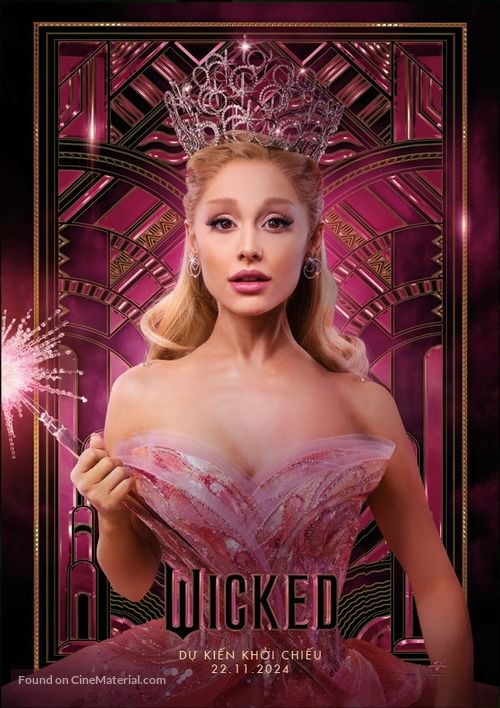
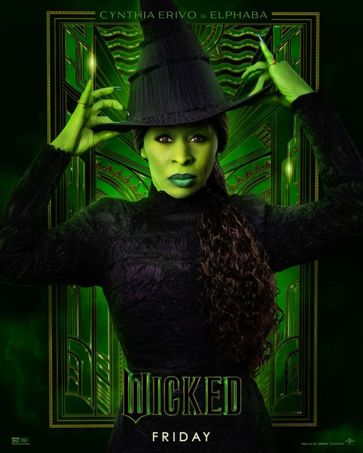
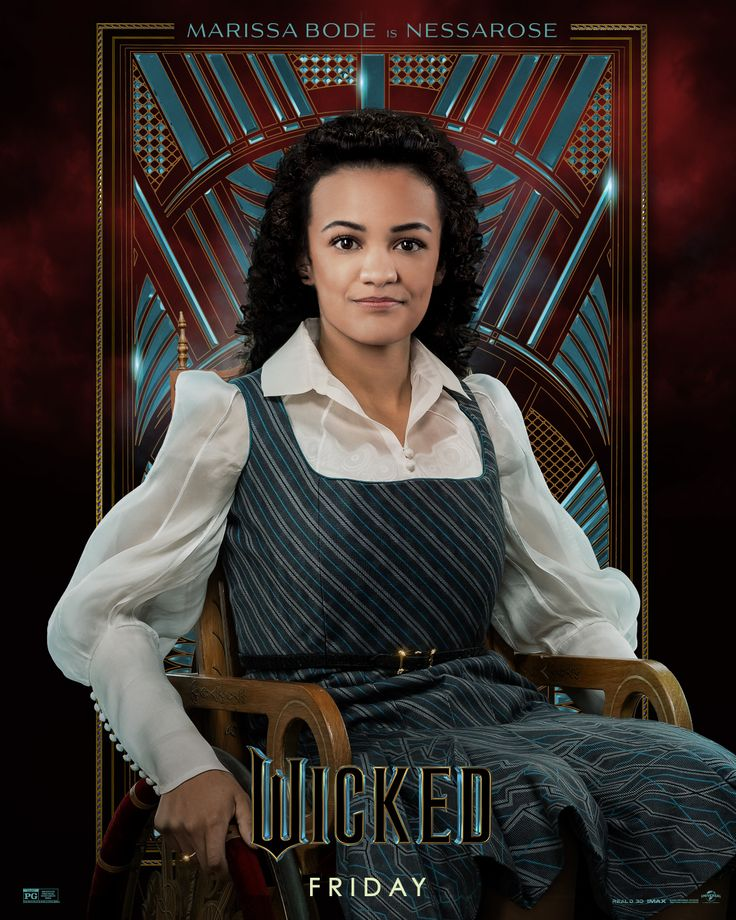
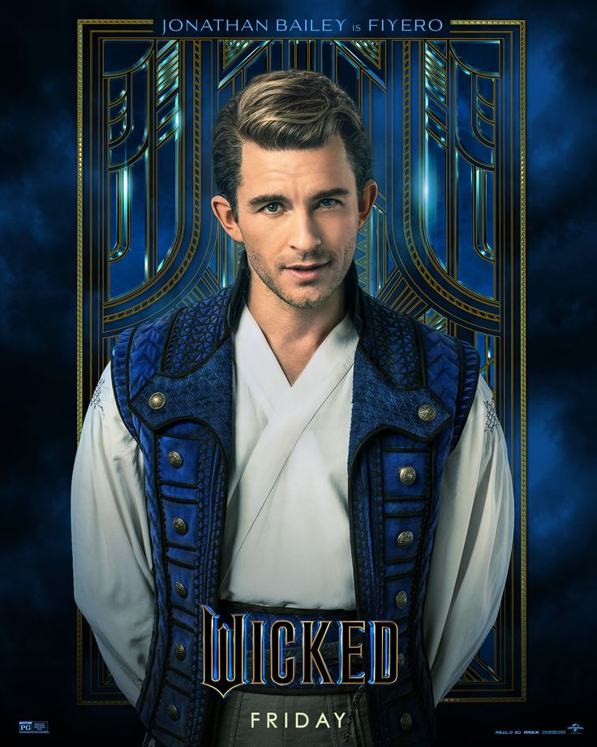
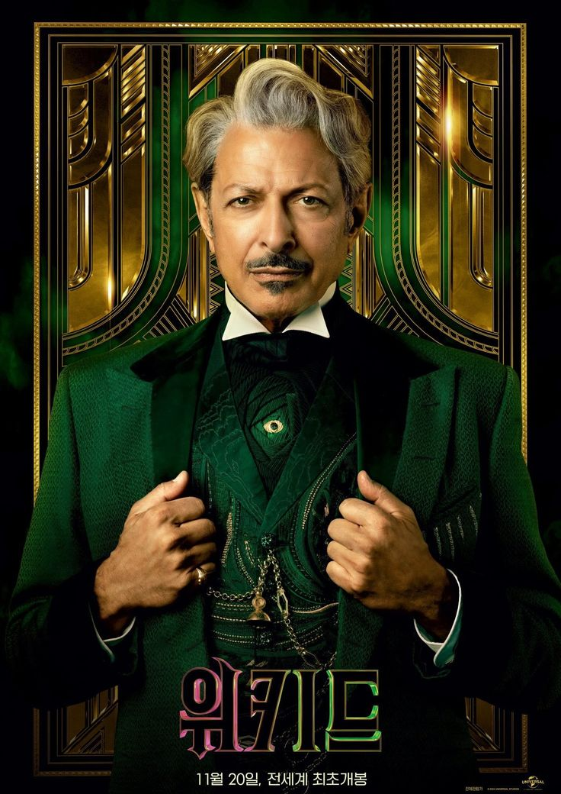

SINÓPSE
Wicked é um filme baseado no aclamado musical da Broadway. Ele conta a história não revelada antes de Dorothy e o Mágico de Oz, focando na origem da Bruxa Boa e da Bruxa Má do Oeste. Elphaba, uma jovem incompreendida no Reino de Oz por sua pele verde incomum, ainda não descobriu seu verdadeiro poder. O filme também apresenta Glinda, uma jovem popular e ambiciosa que ainda não conhece sua verdadeira alma.
A trama se passa antes dos acontecimentos do livro "The Wonderful Wizard of Oz", onde as estudantes Elphaba e Glinda se conhecem na Universidade Shiz e se tornam amigas improváveis, lutando contra personalidades e pontos de vista opostos e a rivalidade pelo mesmo interesse amoroso em meio à Terra de Oz
CHARACTERS




